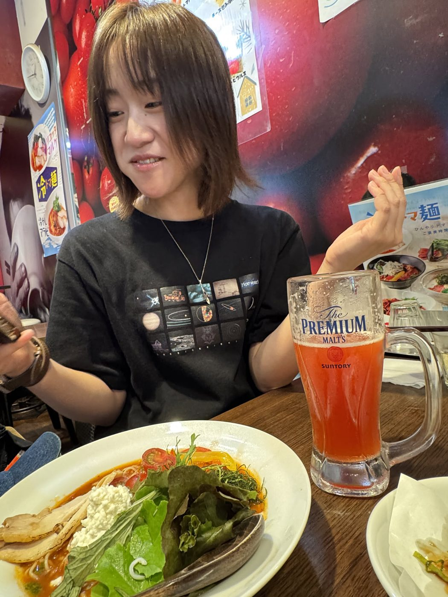
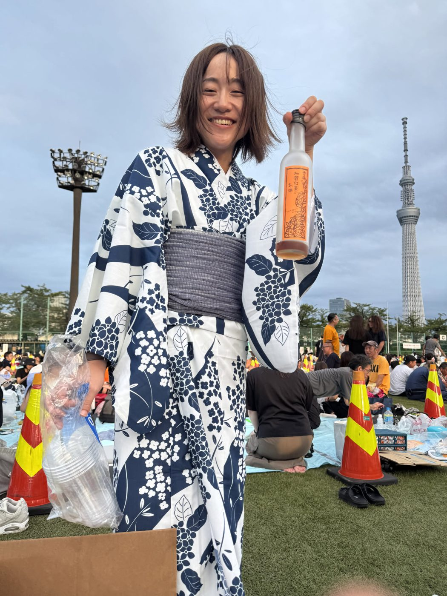
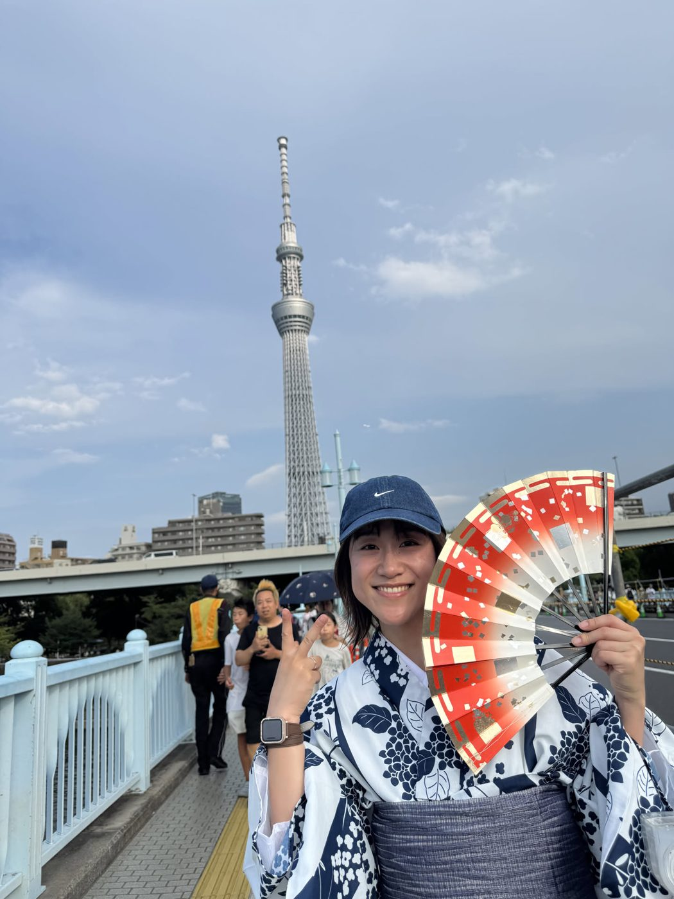
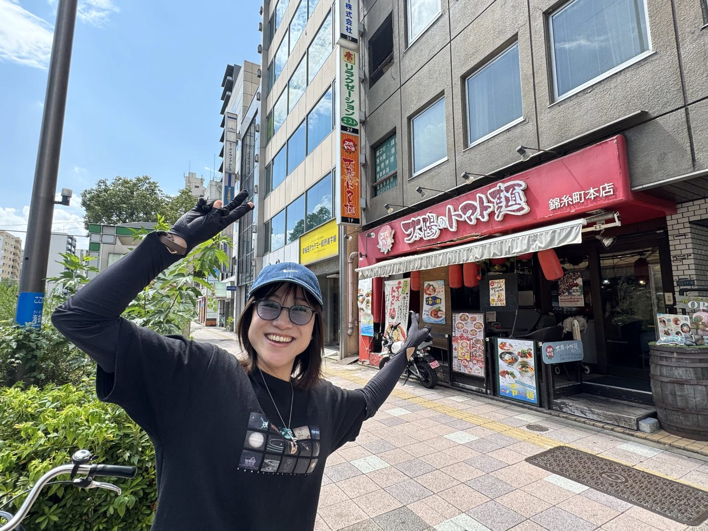
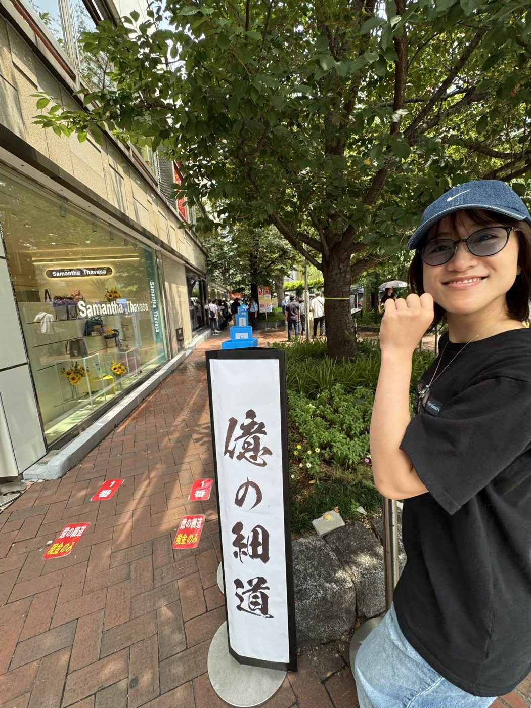

01
新橋の夜
Shimbashi Night
Kimono bar-hopping
Evening · about 2.5 h
東京を、ゆりと
As if you were visiting a friend.
Price on requestBookings opening soon








ゆっくり、座れる

新橋の夜
Kimono bar-hopping
Evening · about 2.5 h


清澄白河
Museum · garden · lunch
Morning · about 3 h


神楽坂から新橋へ
& a Shimbashi Evening Hop
Afternoon into evening
Afternoon · about 3.5 h

Price on requestBookings opening soon